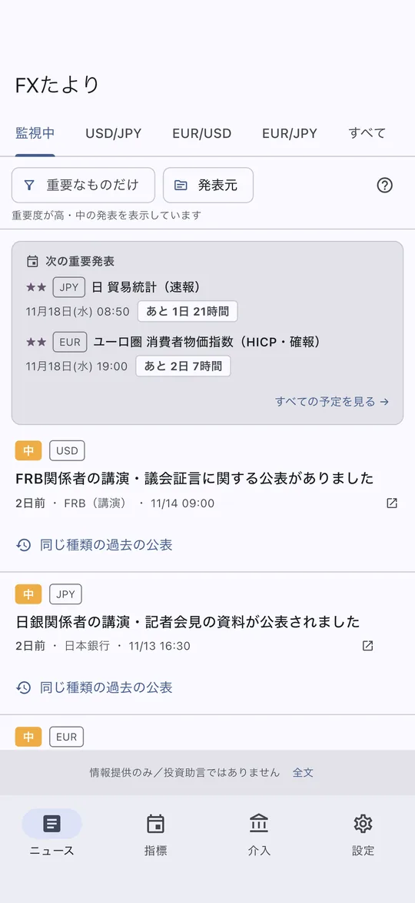
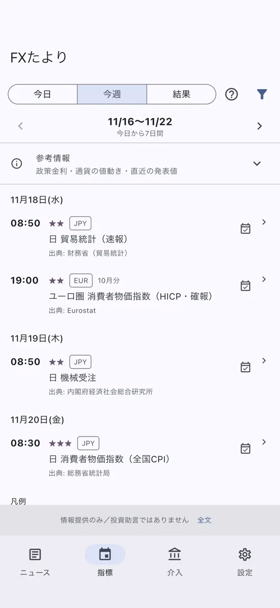
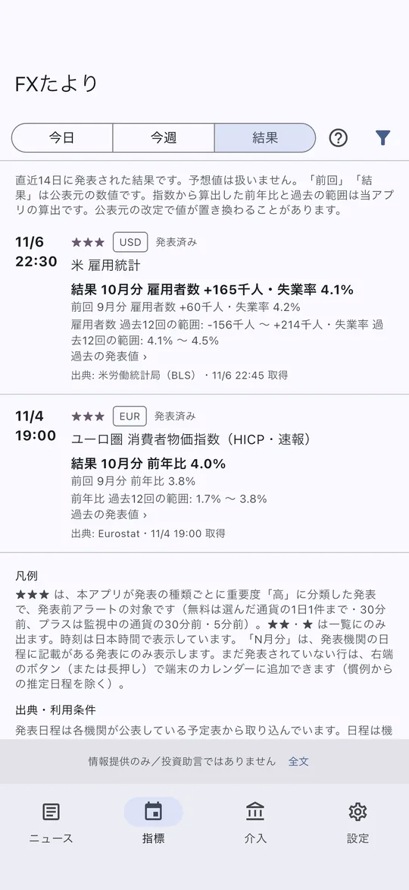
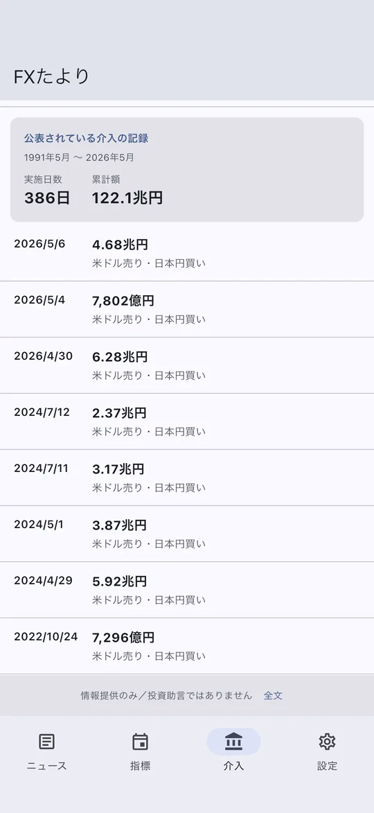

iOS アプリ ／ Android はテスター募集中
記事ではなく、
発表そのもの。
日銀・FRB・財務省などの公表と、重要な経済指標の発表時刻を、選んだ通貨ペアに絞ってお知らせします。お知らせするのは公表の事実と時刻、原文へのリンクが中心です。
- 無料で使える
- 登録不要・広告なし
- 予想値・売買の推奨なし
情報提供のみ／投資助言ではありません。無料で使えます。任意の有料プラン「プラス」は料金をご覧ください。
iPhone のカメラで読み取ると、App Store の FXたより のページが開きます。

【30分後】米 消費者物価指数（CPI）
21:30 発表予定（日本時間） ・ 情報提供のみ／投資助言ではありません
金融政策決定会合の結果が公表されました
12:03 ・ 情報提供のみ／投資助言ではありません
外国為替平衡操作（為替介入）の実施状況が公表されました
19:00 ・ 情報提供のみ／投資助言ではありません
通知の内容を説明するための表示イメージです（時刻・内容は例。実際の見た目は端末によって異なります）。公表の通知の本文は当アプリが独自に付与した分類ラベルで、発表機関の文章ではありません。公表の通知をタップすると原文が開きます。
アプリの画面




表示イメージです（内容は撮影時点のもの）。情報提供のみ／投資助言ではありません。
FXたよりのある1日
（設定で ON にした場合の例）
- 朝（7時〜10時ごろ）今日の主な発表（朝1通）監視中の通貨の、これからの★★★の時刻をまとめて。
- 21:00発表前アラート（30分前）無料は1日1件まで。
- 21:30結果の通知結果・前回・過去の範囲を、出典の機関名と一緒に。
- いつでも介入の記録・証拠金の計算アプリを開いて確かめられます。
時刻は例です。通知は通信環境・端末の設定等により、遅れたり届かなかったりすることがあります。
見ているのは、当局の公式サイトそのもの
日本の3機関（日本銀行・財務省・金融庁）と、海外の中央銀行・政府機関の公式サイトとフィードを、直接監視しています。
日本
- 日本銀行
- 財務省
- 金融庁
米国
- FRB 報道発表
- FRB 講演
- FRB 議会証言
欧州・英国
- 欧州中央銀行（ECB）
- イングランド銀行 発表
- イングランド銀行 講演
オセアニア・カナダ
- カナダ銀行
- オーストラリア準備銀行
経済指標の日程と数値の出典
上の一覧のソースは「公表があったこと」を知らせる通知の監視先です（ニュージーランド準備銀行は利用条件で自動のアクセスが認められていないため、通知の対象にしていません。政策金利と会合の日程は人が公表を確かめて載せています）。経済指標カレンダーの日程と数値は、次の統計機関が公開している予定表とデータを使います。多くは毎日自動で取り込み、自動で取得できない一部の日程（米国の消費者物価指数・雇用統計など）は、公表を確かめて人が載せています。
- 米国経済分析局（BEA）・労働統計局（BLS）
- 英国国家統計局（ONS）
- 日本総務省統計局・内閣府・財務省（貿易統計）
- ユーロ圏Eurostat
- 豪州オーストラリア統計局（ABS）
- カナダカナダ統計局（Statistics Canada）
- 為替レート欧州中央銀行（ECB）ユーロ参照為替レート
- 政策金利各中央銀行の公表値（確認できた機関のみ）。米国はニューヨーク連邦準備銀行が公表する実効フェデラルファンド金利（EFFR）も参照
本アプリは各発表機関・統計機関とは一切関係がなく、公式アプリ・公式サービスではありません。 各機関のロゴや紋章は使用していません。各機関が利用条件として求める出典表示は、アプリ内のカレンダー末尾に常時掲載しています。
発表元を直接見る、という設計
報道記事を経由せず、発表元のサイトとフィードを定期的に確認して、公表があったことをお知らせします。確認の間隔や配信の状況によって通知は遅れることがあり、報道より早く届くことを保証するものではありません。
公式サイトを直接見る
各国の中央銀行・政府機関が自分で出しているページとフィードを、定期的に確認します。ニュース配信会社は経由しません。
為替に関わるものだけ選ぶ
関係する通貨と重要度を機械的に判定し、あなたが監視している通貨ペアに関わる公表だけを残します。
公表があったことを知らせる
分類ラベルと発表元、原文へのリンクを通知します。内容の解釈や見通しは付けません。
できること
通知が主役ですが、あとから公表を確かめる場所も用意しています。
発表前アラート
★★★の発表の前に、時刻をお知らせ
重要度★★★の発表の前にお知らせします。無料でも選んだ通貨の1日1件まで（30分前）、プラスでは監視中の通貨の30分前・5分前。★★★の発表が無い日と、発表時刻が確認できていない（「時刻未定」の）発表にはお送りしません。無料の発表前アラートは、おやすみモードの時間には送りません。
ニュース一覧
公表の一覧を、条件で絞って見る
重要度・発表元・監視している通貨ペアで絞り込めます。先頭には「次の重要発表」として、これから予定されている重要な発表までの残り時間が出ます。
経済指標カレンダー
今日・今週・結果の3つの見方
日本・米国・英国・ユーロ圏・豪州・カナダの主要統計と各国の政策金利発表の日程を載せています。多くは各機関の予定表から毎日自動で取り込み、自動で取得できない一部（米CPI・雇用統計など）は、人が公表を確かめて載せています。発表後は「前回」「結果」と過去の発表値の範囲を表示します。予想値は載せません。
為替介入トラッカー
財務省が公表した実績を、一覧で
実施日・金額・通貨ペアを一覧にしています（金額の単位と通貨の表記は当アプリで整えています）。無料では直近20件、プラスでは1991年からの記録をすべてさかのぼれます。
通貨の値動き・政策金利
換算した事実を、順位を付けずに
欧州中央銀行の参照為替レートから換算した1週間・1か月・3か月の変化率と、各国の政策金利・通貨ペアごとの金利差。通貨コード順に並べ、強弱の評価や売買の示唆は付けません。
ウィジェット
次の発表を、アプリを開かずに
監視中の通貨の次の重要な発表と日時を、ホーム画面とロック画面に置けます（iOS 17 以降）。ウィジェット自体は通信せず、アプリが取り込んだ予定だけを表示します。
通知の設定
鳴りすぎないようにする
監視する通貨ペア（無料3つ・プラス10ペア）、通知する重要度（ニュース）、発表元ごとに通知を止める設定、深夜に止める「おやすみモード」（重要度「高」の発表と結果の通知は送ります）、週の初めに予定をまとめる「今週の主な発表」（週1通・任意）、届くか確かめるテスト通知。仲値・ロンドンフィックスなど市場の時刻の目安（重要度「低」）、米国の休場（「中」）、米国・欧州の夏時間の切り替え（「高」）もお知らせします。どの重要度から通知するかは設定で選べます。
経済指標は、統計機関の予定表から
日程も数値も、各機関が自分で公開しているものだけを取り込みます。市場予想（コンセンサス）は扱いません。
載せるもの
日程・前回・結果・過去の範囲・出典
米CPI・雇用統計、英CPI、ユーロ圏HICP、豪CPI、加CPI は発表後に「結果」が入り、次回の行に「前回」として残ります。「過去12回の範囲」は、いつもはどのくらいの値かという事実です。各行に出典の機関名を示し、指標が何を測るかの解説にも辿れます。
載せないもの
市場予想・コンセンサス
予想値は調査会社の有料データで、転載できません。それ以上に、予想との差で「良い・悪い」を言い始めると、このアプリが投資助言に近づきます。代わりに過去の範囲という事実だけを置き、判断はお任せします。
為替介入の記録を、一覧に
財務省が公表している外国為替平衡操作の実績を、日付・金額・通貨の組み合わせごとに一覧にしています（金額の単位と通貨の表記は当アプリで整えています）。
実施日数・累計額は、2026年10月時点の財務省の公表をもとに当アプリで集計したものです。
載せるもの
実施日・金額・通貨ペア
財務省が公表した実績です。金額は億円・兆円の単位に直して表示しています。無料では直近20件、プラスでは全件を表示します。
載せないもの
「前回から何日」「そろそろか」
経過日数は事実ではありますが、投資判断を促す読み方を誘発するため、意図的に出していません。日付は画面に出ているので、必要な方はご自身でご確認ください。
出典：財務省「外国為替平衡操作の実施状況」を加工して作成（政府標準利用規約 第2.0版）
料金
無料のままで、すべての発表元の通知と、経済指標・為替介入の画面、1日1件までの発表前アラートが使えます。プラスは、通知の対象・回数と、記録の表示を増やす機能を足すものです。
| 機能 | 無料0円 | FXたより プラス月額300円（税込）・自動更新・任意 |
|---|---|---|
| 公式発表の通知 | すべての発表元 | すべての発表元 |
| 経済指標の日程・結果 | あり | あり |
| 監視できる通貨ペア | 3つまで | 10ペアすべて |
| 発表前アラート | 選んだ通貨の★★★ 1日1件まで（30分前） | 監視中の通貨の★★★ 30分前・5分前30分前のみに減らす設定あり |
| 為替介入の履歴 | 直近20件 | すべて（1991年〜） |
| おやすみモード | あり | あり |
アカウント登録なし。広告なし。プラスの価格はストアの表示が正です。アプリ内の「FXたより プラスについて」から購入でき、購入の確定後すぐに（お支払いが保留中の場合は完了後に）ご利用いただけます。
発表前アラートは、★★★の発表が無い日と、「時刻未定」の発表には届きません。無料の発表前アラートは、おやすみモードの時間（未設定の場合は0時〜7時）にも届きません。プラスの発表前アラートは★★★のため、おやすみモードの時間にも送ります。通知は通信環境・端末の設定等により、遅れたり届かなかったりすることがあります。
お支払いは購入の確定時に、App Store では Apple ID、Google Play では Google アカウントに請求されます。期間終了の24時間前までに解約しない限り、自動的に更新されます。 解約は、iPhone では「設定」→ ご自身の名前 →「サブスクリプション」、Android では Google Play ストアの「お支払いと定期購入」→「定期購入」からいつでも行えます。アプリを削除しても解約にはなりません。 期間の途中で解約しても、その期間の終わりまでご利用いただけます（日割りの返金はありません）。 有料プランを購入しても、公表された事実そのものが増減することはありません。
しないこと
できないのではなく、しないと決めていることです。
- 報道機関の記事本文は載せません 著作権のためです。届く見出しは、当アプリが公表内容から独自に付与した分類ラベルであり、発表機関や報道機関の文章ではありません。内容は必ず原文でご確認ください。
- 売買の推奨や相場の見通しは示しません 金融商品取引法上の投資助言・投資勧誘を行うものではありません。相場が上がるか下がるか、買うべきか売るべきかといった判断は一切表示しません。
- 危機感を煽る演出はしません 派手な音や点滅で急かすことはしません。色は重要度と残り時間を見分けるためだけに使い、事実と日付を落ち着いた形で置きます。
- ログイン・入金・個人情報の入力を求める通知は送りません 心当たりのない通知は、リンクを開かずにお問い合わせください。通知の履歴（設定タブ・アプリ 1.5.7 以降）は当方のサーバーが送信の処理をした記録で、通知が本物かどうかを保証するものではありません。
- 個人を特定する情報は集めません 氏名・メールアドレス・電話番号・住所・取引口座・取引履歴・資産の情報は収集しません。保存するためのデータベース項目も設けていません（計算機能の入力値は端末内だけで使い、保存・送信しません）。
正直に書いておくこと
インストールする前に知っておいていただきたい制約です。
- 通知は、公表元の配信状況・通信環境・端末やOSの設定・プッシュ通知基盤の状況により、遅延し、または届かないことがあります。即時性・確実性は保証しません。
- 重要度、影響する通貨、分類ラベルは、機械的に判定したものです。誤り、漏れ、遅れを含むことがあります。
- 経済指標の日程は、多くを各機関の予定表から自動で取り込み、自動で取得できない一部は人が公表を確かめて載せています。機関の都合で変わることがあります。「時刻未定」「暫定」「推定」と表示された日程は確定していません。
- 「前回」「結果」「過去の範囲」、通貨の値動き、政策金利差には、公表元の数値から当アプリが算出・換算した派生値を含みます。市場の実勢や各機関の公表値と異なる場合があり、後日改定されることがあります。
- 統計機関のデータ提供が止まったり形式が変わったりすると、その機関の「結果」が一時的に入らないことがあります。日程・通知・他の機関には影響しません。
- 本アプリは各発表機関とは一切関係がなく、各機関の公式アプリ・公式サービスではありません。
- 個人開発のアプリです。不具合の修正や問い合わせへの返信に、お時間をいただくことがあります。
Android 版のテスターを募集しています
Google Play で公開するために、14日間のテストにご協力いただける方を探しています。インストールしたままにしていただくだけで、毎日使う必要はありません。
- Google Play で使っている Google アカウントで、テスター用の Google グループに参加する
- テストのページで「テスターになる」を押す（グループに入ってから数分かかることがあります）
- Google Playからインストールし、14日間はアンインストールしない
ストアの評価・レビューの投稿はお願いしていません（テストへの参加とは関係ありません）。
グループからメールが届くことはなく、ほかの参加者にメールアドレスが見えることもありません。当方はテスターの管理のためにメールアドレスを閲覧できます（プライバシーポリシー 3.3）。製品版の公開後、グループは閉じて削除します。
よくある質問
お問い合わせの前に、こちらもご確認ください。
FXたよりは、どんなアプリですか
重要な経済指標の発表時刻と、日本銀行・財務省・金融庁・FRB・ECB などの中央銀行・政府機関の公表があったことを、選んだ通貨ペアに絞ってお知らせする iPhone アプリです（Android 版はテスト中）。公表は、各機関の公式サイトとフィードを直接見て確かめています。
経済指標の日程・前回・結果、為替介入の記録、経済指標の基本（13本）と用語集（77語）も見られます。情報提供のみで、売買の推奨や相場の見通しは示しません。通知は遅れたり届かなかったりすることがあります。無料で使え、任意の有料プラン「FXたより プラス」（月額300円・税込。価格はストアの表示が正です）があります。App Store で見る
料金はかかりますか
無料で使えます。すべての発表元の通知、経済指標カレンダーと結果、為替介入の直近20件、監視ペア3つまで、選んだ通貨の★★★の発表前アラート（1日1件まで・30分前）が無料の範囲です。
任意の有料プラン「FXたより プラス」（月額300円・自動更新）で、監視ペアが10すべてに、監視中の通貨の★★★の発表の30分前・5分前の発表前アラート、1991年からの為替介入の記録の表示が加わります。詳しくは料金をご覧ください。
予想値（市場コンセンサス）は見られますか
載せていません。予想値は調査会社の有料データで、転載できないことに加え、予想との差で評価を始めると投資助言に近づくためです。代わりに「前回」「結果」と「過去の発表値の範囲」という事実だけを表示します。
どんな情報が集められますか
氏名・メールアドレス・電話番号・住所・取引口座・取引履歴・資産に関する情報は収集しません。通知を届けるため、および不具合の調査と利用している端末の数の集計のために、技術的な情報（端末ID・通知の宛先のトークン・アプリの版・同意した免責事項の版など）を取り扱います。詳しくはプライバシーポリシーをご覧ください。
プッシュ通知の配信に Google の Firebase Cloud Messaging を利用しているため、アプリの起動時に、Firebase のインストールID・端末とOSの種別・IPアドレスなどが Google（米国）へ送信されます（通知を許可しない場合も送信されます）。通知を許可すると、通知の宛先のトークンも送信されます。また、端末ID・設定・アプリの版などが当方のサーバー（Cloudflare／米国・アジア）へ送信されます。氏名・メールアドレス・取引の情報は集めません。有料プランの決済は Apple または Google が処理し、当方が持つのは有効期限と、購入を確かめるための取引の識別子（Google Play はそのハッシュ値）だけです。詳しくはプライバシーポリシーをご確認ください。
中央銀行の公式アプリですか
いいえ。本アプリは日本銀行、財務省、金融庁、米連邦準備制度理事会、欧州中央銀行その他の発表機関とは一切関係がなく、各機関の公式アプリ・公式サービスではありません。
ニュース記事は読めますか
報道機関の記事本文は掲載していません。通知や一覧からは、発表機関が公開している原文のページを開けます。
対応している通貨ペアは
USD/JPY、EUR/USD、EUR/JPY、GBP/JPY、GBP/USD、AUD/JPY、AUD/USD、USD/CAD、NZD/JPY、NZD/USD の10ペアです。無料では3つまで、プラスでは10すべてを同時に監視できます。
Android 版はありますか
現在はクローズドテストの段階です。テスターを募集しています。公開の時期が決まりましたらこのページでお知らせします。
機種変更のときは
通知の設定（監視する通貨ペア・おやすみモードなど）は新しい端末に引き継がれません。新しい端末のアプリで選び直してください。Android では、機種変更の際にアプリのデータを引き継ぎません。
プラスは、新しい端末のアプリの「FXたより プラスについて」で「購入を復元する」を押すと引き継げます（購入したときと同じ Apple ID／Google アカウントで）。1つのご契約で3台までご利用いただけます（30日以上使っていない端末は数えません）。
解約・返金はどうすればよいですか
解約は、各ストアのサブスクリプションの画面から行えます（iPhone は「設定」→ ご自身の名前 →「サブスクリプション」、Android は Google Play ストアの「お支払いと定期購入」→「定期購入」）。アプリを削除しても解約にはなりません。
購入後のキャンセル・返金は、各ストアの規定によります。
時刻はどこの時間ですか
日本時間です。米国・欧州の夏時間の切り替え（米国は3月・11月、欧州は3月・10月）の前後で、日本時間で見た発表時刻が1時間ずれます。
ウィジェットの置き方は
iOS 17 以降で、アプリを一度開いたあと、ホーム画面を長押し →「編集」→「ウィジェットを追加」（iOS 17 では左上の「＋」）→「FXたより」を選びます。ロック画面には、ロック画面を長押し →「カスタマイズ」から置けます。表示されるのは、アプリが取り込んだ次の重要な発表と日時です。ウィジェット自体は通信しないため、予定を更新するにはアプリを開いてください。
通知が届きません
まずアプリの「設定」からテスト通知をお試しください。端末側で通知が許可されていない場合は、設定画面から端末の通知設定を開けます。アプリ 1.5.7 以降では、「設定」の通知の履歴（送信の記録）で、当方が送信の処理をしたかを確かめられます（届いたことの記録ではありません）。それでも届かない場合は、「設定」に表示される端末IDを添えてご連絡ください。調査が早くなります。
公表があったことを、静かにお知らせします
判断するのはご自身です。本アプリは、公表があったことをお伝えするところまでを担当します。
iOS 15 以降 情報提供のみ／投資助言ではありません